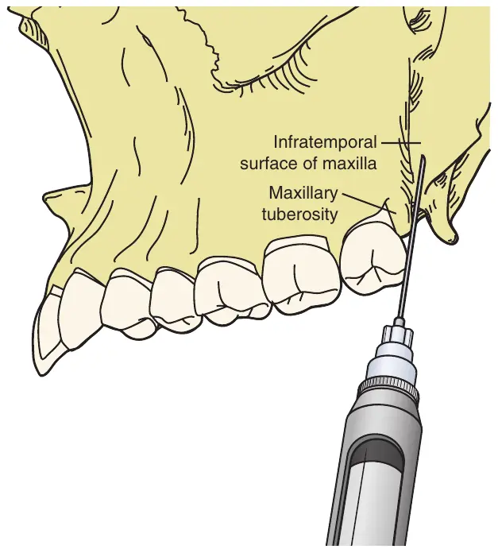
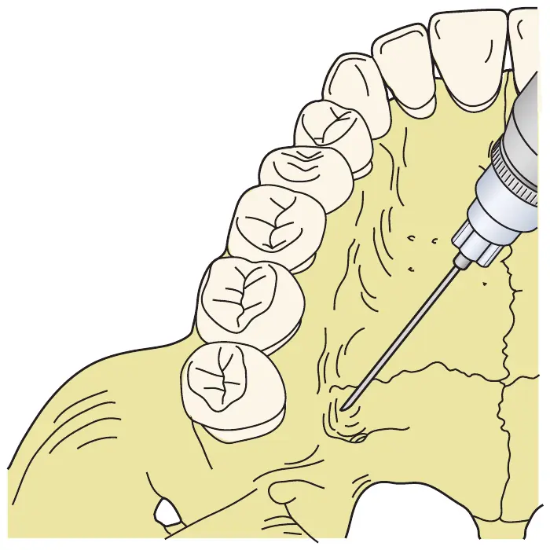

نسخه استخراجشده؛ ترجمه یا تأیید علمی انجام نشده است. وضعیت: captured
اندیکاسیونها: وقتی درمان دو یا چند مولر ماگزیلا را شامل میشود، وقتی انفیلتراسیون سوپراپریوستئال منع دارد، مثلاً به علت عفونت یا التهاب حاد، و وقتی انفیلتراسیون امتحان شده و بیاثر بوده است.

مزایا: اتروماتیک — چون دارو در حجم نسبتاً بزرگی از بافت نرم رها میشود و استخوان لمس نمیشود. نرخ موفقیت بیش از ۹۵ درصد. و یک تزریق بهجای سه انفیلتراسیون.
و حالا خطر اصلی — هماتوم. عمق میانگین نفوذ بافت نرم از محل ورود (چین مخاطی-باکال روی مولر دوم ماگزیلا) تا اعصاب PSA برابر ۱۶ میلیمتر است. یک سوزن کوتاه (حدود ۲۰ میلیمتر) کاملاً کافی است.
پس توصیه این است: برای همهی بیماران بهجز بزرگترین جمجمهها، از سوزن کوتاه استفاده کن. دلیل: با سوزن کوتاه احتمال فرورفتن بیش از حد کمتر است، و همین خطر هماتوم را کم میکند.
و یک هشدار دربارهی اندازهی جمجمه: عمق «میانگین» در بیمار با جمجمهی کوچکتر از متوسط میتواند هماتوم بسازد، در حالی که همان عمق «دقیقاً درست» در بیمار با جمجمهی بزرگتر ممکن است هیچ دندانی را بیحس نکند.
منع مصرف: وقتی خطر خونریزی زیاد است — هموفیلی، یا بیمار تحت وارفارین یا کلوپیدوگرل. در این موارد انفیلتراسیون سوپراپریوستئال یا تزریق داخل لیگامانی توصیه میشود.
بلاک اینفرااربیتال — یافتن لندمارک: شیار اینفرااربیتال را لمس کن، انگشت را از شیار به سمت پایین ببر و فشار ملایم بده، استخوان بلافاصله زیر شیار محدب است و این محدبی همان لبهی پایینی اربیت و سقف سوراخ اینفرااربیتال است.

نقطهی تماس باید لبهی بالایی سوراخ اینفرااربیتال باشد، و عمق نفوذ در بزرگسال با قد متوسط حدود ۱۶ میلیمتر است. ولی این عمق ثابت نیست: در بیمار با چین مخاطی-باکال عمیق یا سوراخ اینفرااربیتال پایین، عمق کمتری لازم است؛ و در بیمار با چین کمعمق یا سوراخ بالا، عمق بیشتری.
بلاک پالاتین بزرگ: سوزن را آهسته جلو ببر تا استخوان کام بهآرامی لمس شود. عمق نفوذ معمولاً حدود ۵ میلیمتر است. حداکثر ۰٫۶ میلیلیتر و در حداقل ۳۰ ثانیه. پیش از شروع کار، دو تا سه دقیقه صبر کن.
بلاک نازوپالاتین — سه نکتهی اجرایی: عمق نفوذ معمولاً بیش از ۵ میلیمتر نیست، حین پیشروی، حجمهای کوچک تزریق کن و بدان که افزایش مقاومت در برابر تزریق در این بلاک طبیعی است، و پس از رسیدن، سوزن را یک میلیمتر بیرون بکش تا از تزریق زیرپریوستی جلوگیری شود و بِوِل روی مرکز سوراخ اینسیزیو بنشیند.
و حجم نازوپالاتین: حداکثر یکچهارم کارتریج (۰٫۴۵ میلیلیتر)، در حداقل ۱۵ تا ۳۰ ثانیه. این تزریق میتواند دردناکترین تزریق دهان باشد و بیحسی فشاری با اپلیکاتور پنبهای باید در تمام مدت ادامه یابد.